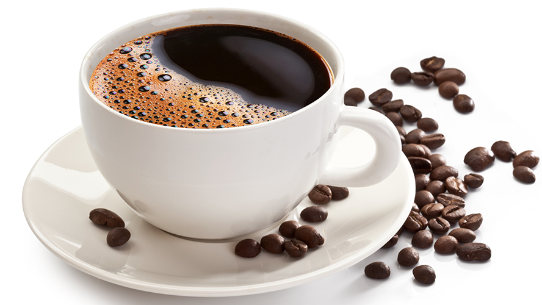
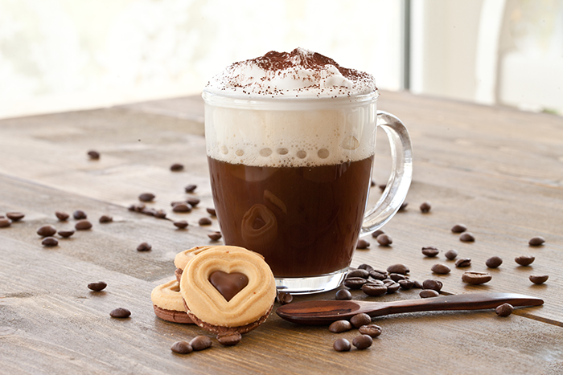

Destaques
-

Café Moído Puro
O café é uma bebida produzida a partir dos grãos torrados do fruto do cafeeiro.
É servido tradicionalmente quente, mas também pode ser consumido gelado.R$5,00
-

Café Expresso
Como é mais concentrado, o café expresso tem o sabor mais
forte e um cheiro mais intenso do que o café coado.R$8,00
-

Cappuccino
Um cappuccino clássico, muito famoso no Brasil e consiste em um terço de café expresso,
um terço de leite vaporizado e um terço de espuma de leite ..R$12,00
Sobre Nós
A cafeteria da Tia Rosa é um lugar encantador que oferece uma ampla variedade de bebidas e alimentos deliciosos.
Localizada em um bairro movimentado da cidade, a cafeteria é um ponto de encontro popular para moradores locais e turistas.
A decoração é acolhedora e rústica, com móveis de madeira e uma lareira aconchegante. Os clientes podem desfrutar de uma xícara de café fresco,
um cappuccino cremoso ou um chá de ervas enquanto saboreiam um dos bolos caseiros da Tia Rosa. Além disso, a cafeteria também oferece sanduíches frescos,
saladas e outras opções de almoço. A equipe é simpática e acolhedora, tornando a experiência do cliente ainda mais agradável. Se você está procurando um lugar
confortável e charmoso para relaxar e desfrutar de uma bebida e comida deliciosa, a cafeteria da Tia Rosa é uma excelente escolha.